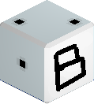

 B-Die Finder
This tool can generate links to search pages on Amazon/Newegg/etc for a bunch of similar kits, all Samsung B-Die.
For more details on B-Die see this reddit post and for a full list of verified B-Die kits see
this reddit post
and that one too.
Filters
Filter known B-Die SKUs or add custom ones.
SKUs (0)
Retailers
Build search links for these websites. You can use presets for your country or add any number of custom search engines.
Sites (0)
Links
Links to search engines for each SKU